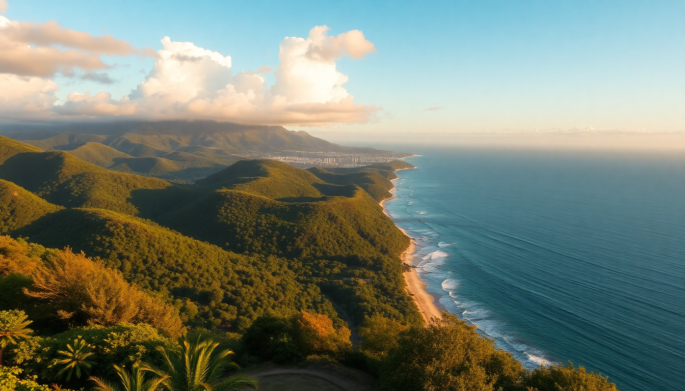

Best Day Trips from Cairns: Reef, Rainforest & Kuranda

I’ve spent weeks based in Cairns, running day trips in every direction, and the biggest mistake I see is people trying to do too much. The reef, the rainforest, and the mountain village of Kuranda are all doable as separate day trips — but you need to pick the right operator, the right timing, and know where the tourist traps hide. Here’s exactly how I’d plan each one.
Which Great Barrier Reef tour should you take from Cairns?
Not all reef tours are equal. The difference between a good day and a great one comes down to boat size, reef location, and how much time you actually spend in the water. I booked with Reef Magic for their outer-reef platform trip — it’s a 90-minute ride from the Cairns Marina, and they moor at Marine World on the outer reef. The pontoon has changing rooms, a semi-submersible, and snorkel gear included. I saw clownfish, giant clams, and a green sea turtle within ten minutes of jumping in.
- Reef Magic — outer reef pontoon, good for families and first-timers; includes lunch and snorkel gear
- Passions of Paradise — smaller sailing catamaran to Michaelmas Cay and Hastings Reef; better for experienced snorkelers who want fewer crowds
- Sunlover Reef Cruises — another pontoon option, with a glass-bottom boat and underwater observatory; good if you’re not confident swimming
- Calypso Reef Cruises — smaller groups, two reef sites, and a marine biologist onboard; I’d pick this if you want more education with your snorkeling
I’d skip the inner-reef trips (like Green Island) if you’ve snorkeled before — the coral is more bleached, and the island itself is a resort-heavy tourist hub. If you get seasick, take seasickness meds an hour before departure. The outer reef gets choppy.
How do you self-drive the Daintree Rainforest in one day?
Renting a car is the way to go. I picked up a 4WD from Hertz on Sheridan Street in Cairns — you don’t strictly need 4WD for the main roads, but it helps on the unpaved tracks near Cape Tribulation. Start early. Drive north to Port Douglas (about an hour), then cross the Daintree River on the cable ferry ($35 AUD return). Once you’re across, the sealed road turns into a winding two-lane through dense canopy.
- Mossman Gorge — stop here first. The walking loop is short (20 minutes), but the swimming hole is cold and clear. The shuttle bus from the visitor centre saves you a dusty walk
- Daintree Discovery Centre — a boardwalk through the canopy with a tower that puts you eye-level with cassowaries (I saw one on the canopy walk)
- Cape Tribulation — the beach where rainforest meets reef. Swim only between the flags; crocs and stingers are real risks
- Walu Wugirriga Lookout — a 10-minute walk to a viewpoint over the coastline; worth it for the photo, but not essential if you’re pressed for time
I made it back to Cairns by 6 PM, but only because I left at 6:30 AM. If you want lunch, Daintree Ice Cream Company near Cape Trib does exotic flavors like black sapote and wattleseed — cash only. The road past Cow Bay gets rough; drive slow.
Is Kuranda worth the trip, and how should you get there?
Kuranda is a tourist town, and it feels like one — the main street is wall-to-wall souvenir shops and butterfly enclosures. But the journey there is the real attraction. I took the Skyrail Rainforest Cableway up and the Kuranda Scenic Railway down, and that combo is worth the full day. The cableway glides over the canopy, with two mid-stations (Red Peak and Barron Falls) where you can get off and walk boardwalks. The train back is slow and scenic, with a stop at Barron Gorge waterfall.
- Skyrail Rainforest Cableway — 90 minutes one-way, with stops at Red Peak and Barron Falls; book the 9 AM slot to avoid crowds
- Kuranda Scenic Railway — 2 hours from Kuranda back to Cairns, winding through 15 tunnels and past waterfalls; sit on the left side for the best views
- Kuranda Markets — Heritage Market (weekends) and Original Market (daily) — fine for a wander, but the prices are inflated. I bought a boomerang for $12 at the Kuranda Koala Gardens gift shop instead
- Kuranda Koala Gardens — small but you can hold a koala; it’s $20 AUD and feels a bit zoo-like, but the kids loved it
If you’re short on time, drive up instead — the Kennedy Highway is a 30-minute twisty road, but you miss the best part. I’d avoid the Rainforestation Nature Park — it’s a pricey package with an army duck ride that felt like a theme park, not the real thing.
When is the best time of year for these day trips?
Dry season (May to October) is the obvious answer, but it matters more for the reef than the rainforest. I did the reef in August — water visibility was 20 meters, and the stingers (jellyfish) were absent. In the wet season (November to April), the reef is still accessible, but you risk rainouts and rough seas. The Daintree is actually better in the wet — waterfalls are fuller, and the humidity makes the forest feel alive. Kuranda gets foggy in the wet season, which can obscure the Skyrail views.
- May to October — best for reef visibility and calm seas; book reef tours early
- November to April — stinger season; wear a stinger suit (provided by most operators) or stick to the pontoon areas
- December to February — wettest months; Daintree roads can flood, and Skyrail sometimes closes for lightning; check conditions before driving
I’d avoid the Christmas school holidays (mid-December to late January) — Cairns is packed, and prices for reef tours jump 30%.
What should you pack for a day trip from Cairns?
I learned this the hard way after a day on the reef without a rash guard. The sun in Tropical North Queensland is brutal — you’ll burn in 15 minutes. For the reef, bring a rash guard (or rent one on the boat), reef-safe sunscreen, a waterproof phone pouch, and a dry bag. For the Daintree, pack insect repellent with DEET (the mossies are relentless near the river), sturdy walking shoes, and a rain jacket even in dry season. For Kuranda, just a light jacket — the cableway gets windy at the mid-stations.
- Reef — rash guard, reef-safe sunscreen, seasickness tablets, waterproof phone pouch, towel
- Daintree — insect repellent, sturdy shoes, rain jacket, water bottle, snacks (limited food options past Mossman)
- Kuranda — light jacket, camera, cash (some market stalls don’t take card)
I always carry a refillable water bottle — Cairns tap water is fine, and most tour operators have refill stations.
FAQ
How far in advance should I book reef tours? At least two weeks in the dry season, especially for smaller boats like Passions of Paradise. I booked Reef Magic three weeks out and still only got the 8 AM departure. In the wet season, you can often book a day or two ahead — but check the weather forecast first; boats still run in light rain.
Can you do the Daintree and Kuranda in one day? Technically yes, but I wouldn’t. You’ll spend more than four hours driving, and both deserve a half-day minimum. If you’re desperate, do the Skyrail up to Kuranda in the morning, then drive north to Mossman Gorge after lunch — but you’ll miss the train ride back and the Daintree River crossing. Pick one.
Is it worth staying overnight in Port Douglas instead of Cairns? If you’re doing the Daintree, yes. Port Douglas is closer to the reef departure points (like the Port Douglas Marina) and the Daintree entrance. I stayed at Mantra PortSea — a solid mid-range option with a pool and short walk to Four Mile Beach. But Cairns has better dining and nightlife; it’s a trade-off.
Conclusion
- Take a reef tour to the outer reef, not Green Island — Reef Magic or Passions of Paradise are solid picks
- Self-drive the Daintree with a 4WD, starting at Mossman Gorge and ending at Cape Tribulation; leave by 6:30 AM
- Do Kuranda via Skyrail up and Scenic Railway down — the journey is better than the destination
- Visit in dry season (May-October) for the reef; wet season works for the Daintree but check road closures
- Pack a rash guard, DEET repellent, and reef-safe sunscreen — the sun and bugs are no joke